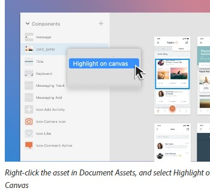

Nesting Style Tag within a Document
The nesting of the style tag inside a document, specifically within elements like figure, is becoming a common approach in modern web development. This approach provides fine-grained CSS control over individual elements.
Normally, the "style" tag is placed in the head section of an HTML document, which applies styles globally to the elements in the document that match the selector. However, when the "style" tag is nested within an element, the styles are scoped to that specific element.
In the provided example, the "style" tag is nested inside a "figure" element. The styles defined in the "style" tag will apply specifically to the element with the corresponding ID in the scope of that "figure" element. This ensures that the styles only affect that particular image and not any other elements with the same ID or class that might exist elsewhere in the document.
This practice makes styles modular and avoids unintended side effects on other elements. It can also override other styles that match the same selector, which can be useful for achieving specific visual effects or functionality for a particular component without affecting others.
<figure class="dexter-Image">
<style>
#root_content_flex_items_position_position-par_flex_1855695883_items_position_position-par_image { width:auto; }
@media (min-width: 600px) {
#root_content_flex_items_position_position-par_flex_1855695883_items_position_position-par_image { width:auto; }
}
@media (min-width: 1200px) {
#root_content_flex_items_position_position-par_flex_1855695883_items_position_position-par_image { width:auto; }
}
</style>
<img id="root_content_flex_items_position_position-par_flex_1855695883_items_position_position-par_image" src="/content/dam/help/en/xd/help/work-with-assets-and-libraries-xd/jcr_content/main-pars/work-with-assets-highlight-on-canvas.jpg.img.jpg" class=" dexter-LazyImage " alt="Highlight on Canvas">
<figcaption>Right-click the asset in Document Assets, and select Highlight on Canvas</figcaption>
</figure>

Here's what's happening in this example:
1. An inline `<style>` block is being included within a
`<figure>` element. This basically embeds the CSS right on the
page, within the HTML, as opposed to linking to an external CSS file.
2. The ID selectors used in the styles
(#root_content_flex_items_position_position-par_flex_1855695883_items_position_position-par_image)
are set to specific values. This means that these styles will only apply to the element
with the corresponding ID (the img element in the example).
3. The use of media queries (@media (min-width: 600px), @media
(min-width: 1200px)) allows the styles to be responsive - i.e., to change
based on the width of the viewport. These styles will only apply if the viewport is at
least 600px or 1200px wide, respectively.
Including styles in this manner does not inherently require or involve the use of the
`:root` pseudo-class.
The naming convention of the image element's ID is to be specific to Adobe's content management rather than a general HTML or CSS feature. "Root_content" implies that this image is originating from the base level of their CMS's structured storage for assets and content.